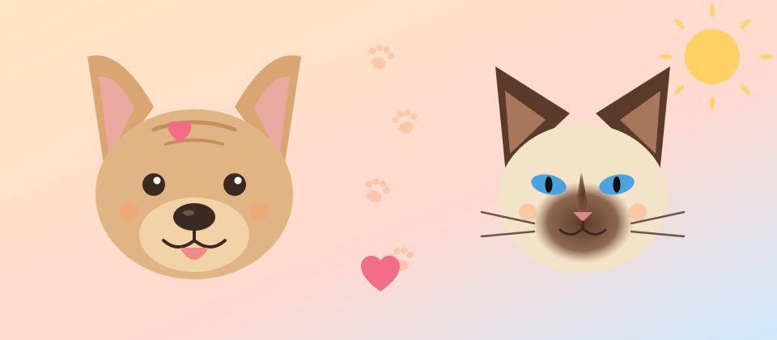

Cats and Dogs
A friendly look at our two favourite pets, with the stories of the French Bulldog and the Siamese cat.

Two favourite companions
People have shared their homes with dogs and cats for thousands of years. This little site looks at two much-loved animals with very different stories: the squashed-faced, bat-eared French Bulldog and the elegant, talkative Siamese cat.
Pull up a chair, and perhaps a warm lap to go with it.
Explore
- French Bulldog: from English lace workers to Paris cafés and beyond.
- Siamese: a cat from Siam, now Thailand, that charmed Britain.
- Cats vs dogs: a fair and light-hearted comparison.